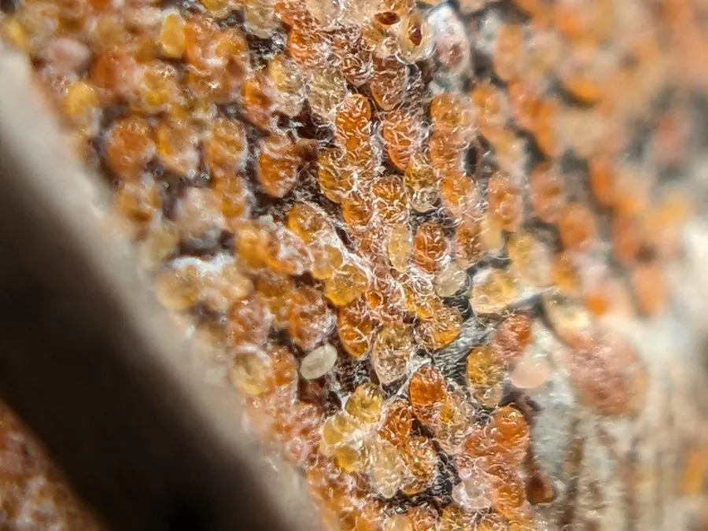

昆虫 · 动物界
桑白盾蚧 Pseudaulacaspis pentagona

危害桑树、桃树等木本植物的盾蚧，雌虫的白色圆形介壳固定在枝干上吸食汁液，严重时导致枝条枯死。
- 分类
- 门节肢动物门纲昆虫纲目半翅目科盾蚧科属白盾蚧属
- 栖息环境
- 桑树、桃树、李树等木本植物的枝干与叶片上
- 地理分布
- 亚洲、欧洲、美洲等温带至亚热带地区
- 保护级别
- 暂无评估
物种志
桑白盾蚧雌成虫介壳呈圆形，直径约 2 mm，白色至灰白色，中央有橙黄色蜕皮点；雌虫身体藏在介壳下方，无翅、足退化；雄虫介壳较小而长，雄成虫有翅，体色橙黄。
桑白盾蚧分布于亚洲、欧洲、美洲等温带至亚热带地区，寄主包括桑树、桃、李、杏、梅、茶等多种木本植物。它以若虫和雌成虫固定在枝干、叶片上刺吸汁液，导致树势衰弱、枝条枯死，严重时整株死亡。雌虫产卵于介壳下，若虫孵化后爬行寻找合适位置固定，随后分泌蜡质形成介壳，一年可发生 2–3 代。介壳能保护虫体免受药剂侵蚀，防治需在若虫孵化盛期施药，并剪除严重受害枝条、保护天敌。
形态与习性
- 食性若虫和雌成虫刺吸枝干、叶片汁液
- 介壳雌虫介壳白色圆形，直径约 2 mm
- 危害导致树势衰弱、枝条枯死
- 繁殖一年可发生 2–3 代，卵产于介壳下
- 防治在若虫孵化盛期施药，剪除严重受害枝条
- 寄主桑树、桃、李、杏、茶等木本植物
趣味知识
- 桑白盾蚧的雌虫藏在白色圆形介壳下，固定在枝干上。
- 它的介壳能保护虫体，药剂很难直接接触到虫体。
- 若虫孵化后会爬行寻找合适位置，固定后分泌介壳。
- 桑白盾蚧可危害桑树、桃树、茶树等多种木本植物。